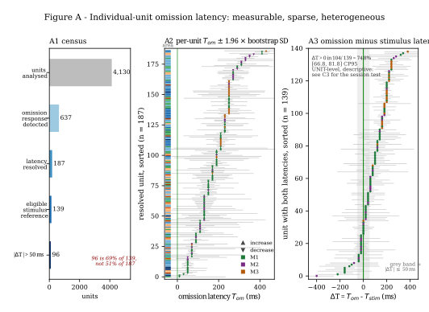
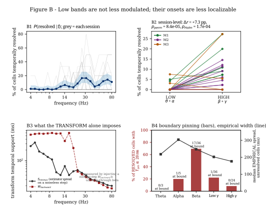
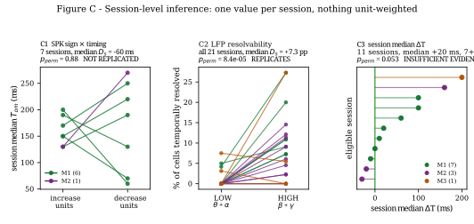
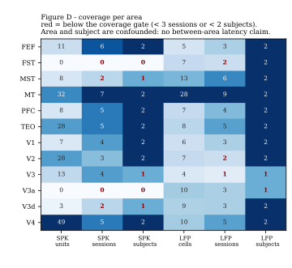

Static publication figures
Vector SVG, generated by the frozen figure script from the same canonical tables that drive the interactive pages. These are the citable versions.




Figure E does not exist. A common-axis SPK-vs-LFP comparison is held pending separate authorization. The LFP side would need an interval-and-censoring representation, and producing it merely because a website can display it would invert the order of evidence.